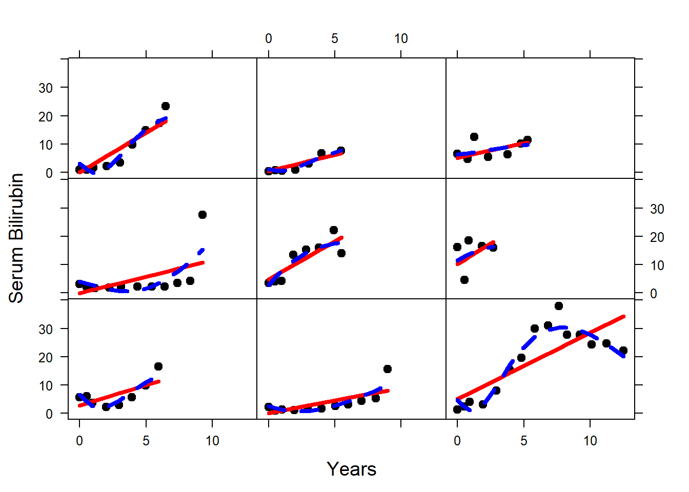

The pbc2 data is used from the JMbayes package
library(JMbayes)
summary(pbc2)## id years status drug age sex
## 32 : 16 Min. : 0.1123 alive :1073 placebo :967 Min. :26.28 male : 237
## 42 : 16 1st Qu.: 5.6264 transplanted: 147 D-penicil:978 1st Qu.:41.79 female:1708
## 58 : 16 Median : 8.1125 dead : 725 Median :48.87
## 19 : 15 Mean : 8.0516 Mean :49.26
## 40 : 15 3rd Qu.:10.4561 3rd Qu.:56.15
## 43 : 15 Max. :14.3057 Max. :78.44
## (Other):1852
## year ascites hepatomegaly spiders edema serBilir
## Min. : 0.0000 No :1716 No :952 No :1311 No edema :1401 Min. : 0.100
## 1st Qu.: 0.5257 Yes : 169 Yes :932 Yes : 576 edema no diuretics : 379 1st Qu.: 0.800
## Median : 2.0534 NA's: 60 NA's: 61 NA's: 58 edema despite diuretics: 165 Median : 1.400
## Mean : 3.1359 Mean : 3.672
## 3rd Qu.: 5.0323 3rd Qu.: 3.900
## Max. :14.1058 Max. :41.000
##
## serChol albumin alkaline SGOT platelets prothrombin
## Min. : 55.0 Min. :1.17 Min. : 73 Min. : 6.2 Min. : 40.0 Min. : 9.0
## 1st Qu.: 235.0 1st Qu.:3.11 1st Qu.: 737 1st Qu.: 72.0 1st Qu.:165.0 1st Qu.:10.1
## Median : 281.0 Median :3.44 Median : 1072 Median : 107.0 Median :228.0 Median :10.8
## Mean : 320.5 Mean :3.39 Mean : 1382 Mean : 122.7 Mean :233.7 Mean :11.0
## 3rd Qu.: 349.2 3rd Qu.:3.70 3rd Qu.: 1636 3rd Qu.: 155.0 3rd Qu.:290.2 3rd Qu.:11.5
## Max. :1775.0 Max. :8.01 Max. :13862 Max. :1205.0 Max. :991.0 Max. :36.0
## NA's :821 NA's :60 NA's :73
## histologic status2
## Min. :1.000 Min. :0.0000
## 1st Qu.:3.000 1st Qu.:0.0000
## Median :3.000 Median :0.0000
## Mean :3.265 Mean :0.3728
## 3rd Qu.:4.000 3rd Qu.:1.0000
## Max. :4.000 Max. :1.0000
## library(lattice)
p1 <- xyplot(serBilir ~ year, groups = id, data = pbc2[pbc2$status %in% c("dead", "transplanted"), ], col = "grey", lwd = 1, type = "l",
ylab = list(label = "Serum Bilirubin", cex = 1.2), ylim=c(0, 41), xlim = c(0, 12.5),
xlab = list(label = "Years", cex = 1.2),
main = list(label = "Dead or transplanted patients", cex = 1.04),
panel = function(x, y,...) {
panel.xyplot(x, y, ...)
panel.xyplot(pbc2$year[pbc2$status %in% c("dead", "transplanted")], pbc2$serBilir[pbc2$status %in% c("dead", "transplanted")], col = 1, lwd = 5, type = "smooth")
})
p2 <- xyplot(serBilir ~ year, groups = id, data = pbc2[pbc2$status %in% c("alive"), ], col = "grey", lwd = 1, type = "l",
ylab = list(label = "Serum Bilirubin", cex = 1.2), ylim=c(0, 41), xlim = c(0, 12.5),
xlab = list(label = "Years", cex = 1.2),
main = list(label = "Alive patients", cex = 1.04),
panel = function(x, y,...) {
panel.xyplot(x, y, ...)
panel.xyplot(pbc2$year[pbc2$status %in% c("alive")], pbc2$serBilir[pbc2$status %in% c("alive")], col = 1, lwd = 5, type = "smooth")
})
print(p1, split = c(1, 1, 2, 1), more = TRUE)
print(p2, split = c(2, 1, 2, 1))